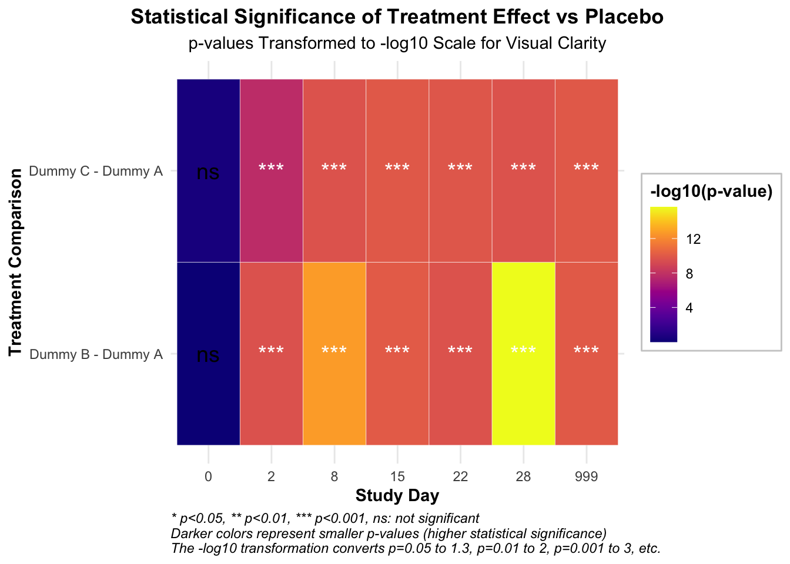

Repeated measurements are taken on the same individuals over time.
The primary objective of most longitudinal studies is to characterize changes in a particular outcome variable of interest over time. However, we are not only interested in change itself but also in the factors that may influence this change. These factors could be treatment interventions, such as dummy variables abc, and we want to know whether the treatment has an effect on change over time. Does the intervention lead to greater improvements in the outcome over time? It could also be exposures like sex.
There are two aspects of the data that complicate the analysis, meaning that we cannot use many of the routine regression techniques we are already familiar with. The first is that if you take repeated measurements over time, those measurements will be correlated and are usually positively correlated. For example, if my systolic blood pressure is high today, it provides more information about future measurements. The second is that when you take repeated measurements over time, the variability of those measurements is often heterogeneous over time. This means that the variability of the outcome at the start of the longitudinal study can often be different from the variability of the outcome later on.
Both correlation and variability play important roles in this model, and therefore covariance matrix is particularly significant.
Introduce occasions or time, which are not the same.
This study period is short, just 28 days, which is quicker when computing the unstructure matrix
The data is balanced, meaning that each individual has been measured at the same occasions.
further improvement
The mixed model can be more flexible for smoothing and semi-parametric regression.
compareGroups
# 将SITEID分为5组library(dplyr)
Attaching package: 'dplyr'
The following objects are masked from 'package:stats':
filter, lag
The following objects are masked from 'package:base':
intersect, setdiff, setequal, union
--------Summary descriptives table by 'madrsc'---------
_______________________________________________________________________________________________________
[ALL] MADRS SCORE < 40 MADRS SCORE ≥ 40 p.overall
N=3241 N=2525 N=716
¯¯¯¯¯¯¯¯¯¯¯¯¯¯¯¯¯¯¯¯¯¯¯¯¯¯¯¯¯¯¯¯¯¯¯¯¯¯¯¯¯¯¯¯¯¯¯¯¯¯¯¯¯¯¯¯¯¯¯¯¯¯¯¯¯¯¯¯¯¯¯¯¯¯¯¯¯¯¯¯¯¯¯¯¯¯¯¯¯¯¯¯¯¯¯¯¯¯¯¯¯¯¯
AGE 0.00 (1.00) 0.02 (1.03) -0.06 (0.88) 0.045
SEX: 0.006
F 1928 (59.5%) 1470 (58.2%) 458 (64.0%)
M 1313 (40.5%) 1055 (41.8%) 258 (36.0%)
RACE: .
WHITE 2788 (86.0%) 2177 (86.2%) 611 (85.3%)
AMERICAN INDIAN OR ALASKA NATIVE 6 (0.19%) 6 (0.24%) 0 (0.00%)
ASIAN 97 (2.99%) 83 (3.29%) 14 (1.96%)
BLACK OR AFRICAN AMERICAN 241 (7.44%) 185 (7.33%) 56 (7.82%)
MULTIPLE 60 (1.85%) 46 (1.82%) 14 (1.96%)
NATIVE HAWAIIAN OR OTHER PACIFIC ISLANDER 14 (0.43%) 7 (0.28%) 7 (0.98%)
NOT REPORTED 28 (0.86%) 21 (0.83%) 7 (0.98%)
UNKNOWN 7 (0.22%) 0 (0.00%) 7 (0.98%)
TRT01A: 0.429
Dummy A 1610 (49.7%) 1252 (49.6%) 358 (50.0%)
Dummy B 819 (25.3%) 650 (25.7%) 169 (23.6%)
Dummy C 812 (25.1%) 623 (24.7%) 189 (26.4%)
PCHG 0.00 (1.00) 0.00 (1.01) 0.01 (0.95) 0.802
CHG -8.82 (10.4) -8.31 (9.82) -10.61 (12.2) <0.001
BASE 0.00 (1.00) -0.37 (0.80) 1.29 (0.36) 0.000
AVAL 0.00 (1.00) -0.17 (0.90) 0.60 (1.09) <0.001
¯¯¯¯¯¯¯¯¯¯¯¯¯¯¯¯¯¯¯¯¯¯¯¯¯¯¯¯¯¯¯¯¯¯¯¯¯¯¯¯¯¯¯¯¯¯¯¯¯¯¯¯¯¯¯¯¯¯¯¯¯¯¯¯¯¯¯¯¯¯¯¯¯¯¯¯¯¯¯¯¯¯¯¯¯¯¯¯¯¯¯¯¯¯¯¯¯¯¯¯¯¯¯
summary(table1)
---Available data----
___________________________________________________________________________________
[ALL] MADRS SCORE < 40 MADRS SCORE ≥ 40 method select Fact OR/HR
¯¯¯¯¯¯¯¯¯¯¯¯¯¯¯¯¯¯¯¯¯¯¯¯¯¯¯¯¯¯¯¯¯¯¯¯¯¯¯¯¯¯¯¯¯¯¯¯¯¯¯¯¯¯¯¯¯¯¯¯¯¯¯¯¯¯¯¯¯¯¯¯¯¯¯¯¯¯¯¯¯¯¯
AGE 3241 2525 716 continuous-normal ALL 1
SEX 3241 2525 716 categorical ALL --
RACE 3241 2525 716 categorical ALL --
TRT01A 3241 2525 716 categorical ALL --
PCHG 2765 2153 612 continuous-normal ALL 1
CHG 2765 2153 612 continuous-normal ALL 1
BASE 3241 2525 716 continuous-normal ALL 1
AVAL 3241 2525 716 continuous-normal ALL 1
¯¯¯¯¯¯¯¯¯¯¯¯¯¯¯¯¯¯¯¯¯¯¯¯¯¯¯¯¯¯¯¯¯¯¯¯¯¯¯¯¯¯¯¯¯¯¯¯¯¯¯¯¯¯¯¯¯¯¯¯¯¯¯¯¯¯¯¯¯¯¯¯¯¯¯¯¯¯¯¯¯¯¯
+++++see mean
# Load required librarieslibrary(readxl) # For reading Excel fileslibrary(dplyr) # For data manipulationlibrary(tidyr) # For data manipulation
Attaching package: 'tidyr'
The following object is masked _by_ '.GlobalEnv':
table1
# Read the data from the Excel filedata <-read_excel("3.xlsx")# Convert AVISIT to a numeric factor to sort by the day of the visitdata$AVISIT <-factor(data$AVISIT, levels =unique(data$AVISIT)[order(as.numeric(gsub("Day \\d+ \\(", "", gsub(" \\(DB\\)", "", data$AVISIT)) ))])
Warning in order(as.numeric(gsub("Day \\d+ \\(", "", gsub(" \\(DB\\)", "", :
NAs introduced by coercion
# Group by AVISIT and TRT01A, then calculate mean of AVAL for each groupresult <- data %>%group_by(AVISIT, TRT01A) %>%summarise(mean_AVAL =mean(AVAL, na.rm =TRUE)) %>%ungroup() %>%# Remove grouping to allow sortingarrange(AVISIT) %>%# Sort by AVISIT (now a numeric factor)pivot_wider(names_from = TRT01A, values_from = mean_AVAL) # Pivot the table
`summarise()` has grouped output by 'AVISIT'. You can override using the
`.groups` argument.
AVISITN = 28:
contrast estimate SE df t.ratio p.value
Dummy B - Dummy A -0.841 0.0992 651 -8.482 <.0001
Dummy C - Dummy A -0.798 0.0791 596 -10.098 <.0001
Results are averaged over the levels of: SEX, SITEID, RACE, base_situation
P value adjustment: dunnettx method for 2 tests
TRT01A AVISITN emmean SE df lower.CL upper.CL Time
16 Dummy A 28 -0.2659051 0.1290646 798.1815 -0.5192512 -0.01255906 28
17 Dummy B 28 -1.1072886 0.1571637 999.6623 -1.4156972 -0.79888004 28
18 Dummy C 28 -1.0642296 0.1466599 979.1475 -1.3520335 -0.77642572 28
# Day 28时的柱状图p1 <-ggplot(day28_df, aes(x = TRT01A, y = emmean, fill = TRT01A)) +geom_bar(stat ="identity", width =0.7, color ="black") +geom_errorbar(aes(ymin = emmean - SE, ymax = emmean + SE), width =0.2) +labs(title ="Change from Baseline in MADRS Total Score at Day 28",subtitle ="Estimated Marginal Means with Standard Errors",x ="Treatment Group",y ="Estimated Mean Change from Baseline",fill ="Treatment Group",caption ="Note: Error bars represent standard errors. Negative values indicate improvement in depressive symptoms." ) +scale_fill_viridis(discrete =TRUE, option ="D",labels =c("Placebo", "Esketamine 56 mg", "Esketamine 84 mg")) +theme_minimal() +theme(legend.position ="bottom",legend.background =element_rect(fill ="white", color ="grey80"),legend.title =element_text(face ="bold"),axis.title =element_text(face ="bold"),plot.title =element_text(hjust =0.5, face ="bold"),plot.subtitle =element_text(hjust =0.5),plot.caption =element_text(hjust =0, face ="italic"),axis.text.x =element_text(angle =0, hjust =0.5) ) +# 添加标签geom_text(aes(label =sprintf("%.1f", emmean)), position =position_dodge(width =0.7), vjust =-0.5, color ="black", fontface ="bold")# 输出绘图数据contrasts_day28_df
AVISITN = 28:
contrast estimate SE df t.ratio p.value
Dummy B - Dummy A -0.8413835 0.09919806 650.97 -8.482 <.0001
Dummy C - Dummy A -0.7983245 0.07905644 595.89 -10.098 <.0001
Results are averaged over the levels of: SEX, SITEID, RACE, base_situation
P value adjustment: dunnettx method for 2 tests
# 绘制治疗组vs安慰剂的差异图p2 <-ggplot(contrasts_day28_df, aes(x = contrast, y = estimate, fill = contrast)) +geom_bar(stat ="identity", width =0.7, color ="black") +geom_errorbar(aes(ymin = estimate - SE, ymax = estimate + SE), width =0.2) +labs(title ="Treatment Effect vs Placebo at Day 28",subtitle ="Difference in Estimated Means with Standard Errors",x ="Treatment Comparison",y ="Estimated Difference vs Placebo",fill ="Treatment Comparison",caption ="Note: Values below zero favor active treatment over placebo.\nRed dashed line represents no difference from placebo." ) +scale_fill_viridis(discrete =TRUE, option ="E",labels =c("Esketamine 56 mg vs Placebo", "Esketamine 84 mg vs Placebo")) +theme_minimal() +theme(legend.position ="bottom",legend.background =element_rect(fill ="white", color ="grey80"),legend.title =element_text(face ="bold"),axis.title =element_text(face ="bold"),plot.title =element_text(hjust =0.5, face ="bold"),plot.subtitle =element_text(hjust =0.5),plot.caption =element_text(hjust =0, face ="italic"),axis.text.x =element_text(angle =45, hjust =1) ) +geom_hline(yintercept =0, linetype ="dashed", color ="red") +# 添加p值和效应量标签geom_text(aes(label =sprintf("Diff: %.1f\np = %.3f", estimate, p.value)), position =position_dodge(width =0.7), vjust =-0.8, size =3.5)# 使用patchwork组合两个图library(patchwork)combined_plot <- p1 + p2 +plot_layout(ncol =2)combined_plot <- combined_plot +plot_annotation(title ="MADRS Score Change and Treatment Effect at Day 28",theme =theme(plot.title =element_text(hjust =0.5, face ="bold", size =16)))# 保存组合图ggsave("Day28_treatment_effect_with_legend.png", combined_plot, width =12, height =6, dpi =300)# 输出绘图数据contrasts_all_df
AVISITN = 0:
contrast estimate SE df t.ratio p.value Time
Dummy B - Dummy A 0.0017143 0.04113726 415.00 0.042 0.9972 0
Dummy C - Dummy A 0.0494328 0.04177930 415.89 1.183 0.3944 0
AVISITN = 2:
contrast estimate SE df t.ratio p.value Time
Dummy B - Dummy A -0.6929711 0.07475349 588.39 -9.270 <.0001 2
Dummy C - Dummy A -0.5341834 0.09229578 670.43 -5.788 <.0001 2
AVISITN = 8:
contrast estimate SE df t.ratio p.value Time
Dummy B - Dummy A -0.6956335 0.09261148 668.33 -7.511 <.0001 8
Dummy C - Dummy A -0.7727962 0.07955698 595.88 -9.714 <.0001 8
AVISITN = 15:
contrast estimate SE df t.ratio p.value Time
Dummy B - Dummy A -0.7412707 0.09620677 508.54 -7.705 <.0001 15
Dummy C - Dummy A -0.7891862 0.09702519 515.94 -8.134 <.0001 15
AVISITN = 22:
contrast estimate SE df t.ratio p.value Time
Dummy B - Dummy A -0.8409304 0.07877781 589.92 -10.675 <.0001 22
Dummy C - Dummy A -0.6454649 0.09907534 656.61 -6.515 <.0001 22
AVISITN = 28:
contrast estimate SE df t.ratio p.value Time
Dummy B - Dummy A -0.8413835 0.09919806 650.97 -8.482 <.0001 28
Dummy C - Dummy A -0.7983245 0.07905644 595.89 -10.098 <.0001 28
AVISITN = 999:
contrast estimate SE df t.ratio p.value Time
Dummy B - Dummy A -0.7011922 0.09474272 512.36 -7.401 <.0001 999
Dummy C - Dummy A -0.8010667 0.09530024 514.97 -8.406 <.0001 999
Results are averaged over the levels of: 1 nuisance factors, SEX, SITEID, base_situation
P value adjustment: dunnettx method for 2 tests
# 创建森林图展示各时间点的治疗效果ggplot(contrasts_all_df, aes(x = AVISITN, y = estimate, color = contrast)) +geom_point(size =3) +geom_errorbar(aes(ymin = estimate - SE*1.96, ymax = estimate + SE*1.96), width =0.2) +geom_line(aes(group = contrast), linewidth =1) +geom_hline(yintercept =0, linetype ="dashed", color ="red") +facet_wrap(~ contrast, ncol =1) +labs(title ="Treatment Effect vs Placebo Over Time",subtitle ="Estimated Differences with 95% Confidence Intervals",x ="Study Day",y ="Estimated Difference vs Placebo",color ="Treatment Comparison",caption =paste("Note: Points below zero favor active treatment over placebo.","Error bars represent 95% confidence intervals.","Non-overlapping confidence intervals with red dashed line (zero) indicate statistical significance.") ) +scale_color_viridis(discrete =TRUE, option ="D",labels =c("Esketamine 56 mg vs Placebo", "Esketamine 84 mg vs Placebo")) +theme_minimal() +theme(legend.position ="bottom",legend.background =element_rect(fill ="white", color ="grey80"),legend.title =element_text(face ="bold"),strip.background =element_rect(fill ="lightgrey"),strip.text =element_text(face ="bold"),axis.title =element_text(face ="bold"),plot.title =element_text(hjust =0.5, face ="bold"),plot.subtitle =element_text(hjust =0.5),plot.caption =element_text(hjust =0, face ="italic") ) +# 添加p值标签geom_text(aes(label =sprintf("p = %.3f", p.value)), position =position_dodge(width =0.5), vjust =-0.8, color ="black", size =3)
Time contrast p.value sig neg_log10_p
1 0 Dummy B - Dummy A 9.971599e-01 ns 0.001235183
2 0 Dummy C - Dummy A 3.943676e-01 ns 0.404098792
3 2 Dummy B - Dummy A 2.484033e-10 *** 9.604842643
4 2 Dummy C - Dummy A 2.131253e-08 *** 7.671365020
5 8 Dummy B - Dummy A 1.882938e-13 *** 12.725163922
6 8 Dummy C - Dummy A 2.354221e-10 *** 9.628152722
7 15 Dummy B - Dummy A 8.864287e-11 *** 10.052356187
8 15 Dummy C - Dummy A 1.091197e-10 *** 9.962096784
9 22 Dummy B - Dummy A 2.467375e-10 *** 9.607764806
10 22 Dummy C - Dummy A 1.448419e-10 *** 9.839105738
11 28 Dummy B - Dummy A 2.220446e-16 *** 15.653559775
12 28 Dummy C - Dummy A 2.352738e-10 *** 9.628426432
13 999 Dummy B - Dummy A 1.000091e-10 *** 9.999960428
14 999 Dummy C - Dummy A 1.063928e-10 *** 9.973087829
# 绘制p值热图ggplot(p_values_long, aes(x =factor(Time), y = contrast, fill =-log10(p.value))) +geom_tile(color ="white") +# 根据显著性调整文本颜色geom_text(aes(label = sig, color =ifelse(p.value <0.05, "white", "black")), size =5) +# 手动设置文本颜色scale_color_identity() +# 设置小p值(高-log10(p值))为深色scale_fill_viridis(option ="C", name ="-log10(p-value)", direction =1) +labs(title ="Statistical Significance of Treatment Effect vs Placebo",subtitle ="p-values Transformed to -log10 Scale for Visual Clarity",x ="Study Day",y ="Treatment Comparison",caption =paste("* p<0.05, ** p<0.01, *** p<0.001, ns: not significant","Darker colors represent smaller p-values (higher statistical significance)","The -log10 transformation converts p=0.05 to 1.3, p=0.01 to 2, p=0.001 to 3, etc.", sep ="\n") ) +theme_minimal() +theme(axis.title =element_text(face ="bold"),plot.title =element_text(hjust =0.5, face ="bold"),plot.subtitle =element_text(hjust =0.5),plot.caption =element_text(hjust =0, face ="italic"),legend.position ="right",legend.title =element_text(face ="bold"),legend.background =element_rect(fill ="white", color ="grey80") )

# 保存热图ggsave("Treatment_significance_heatmap_with_legend.png", width =10, height =6, dpi =300)# 创建模型诊断图# 提取残差residuals <-residuals(fit)fitted_values <-fitted(fit)# 创建诊断数据框diag_df <-data.frame(Fitted = fitted_values,Residuals = residuals)# 为QQ图准备数据qq_data <-qqnorm(residuals, plot.it =FALSE)qq_df <-data.frame(Theoretical = qq_data$x, Sample = qq_data$y)# 绘制残差图p3 <-ggplot(diag_df, aes(x = Fitted, y = Residuals)) +geom_point(alpha =0.5, color ="blue") +geom_hline(yintercept =0, linetype ="dashed", color ="red") +geom_smooth(method ="loess", se =TRUE, color ="red", fill ="pink", alpha =0.3) +labs(title ="Residuals vs Fitted Values",subtitle ="Assessment of Homoscedasticity and Linearity",x ="Fitted Values",y ="Residuals",caption ="Note: Points should be randomly scattered around zero line (red dashed line).\nThe smooth curve (red) should be approximately horizontal." ) +theme_minimal() +theme(axis.title =element_text(face ="bold"),plot.title =element_text(hjust =0.5, face ="bold"),plot.subtitle =element_text(hjust =0.5),plot.caption =element_text(hjust =0, face ="italic") ) +# 添加解释性文本annotate("text", x =min(fitted_values) +0.1*(max(fitted_values)-min(fitted_values)), y =max(residuals)*0.8, label ="Ideal pattern: Random scatter\naround the zero line with no pattern", hjust =0, size =3.5, fontface ="italic")# 绘制残差的QQ图p4 <-ggplot(qq_df, aes(x = Theoretical, y = Sample)) +geom_point(alpha =0.5, color ="blue") +geom_abline(intercept =0, slope =10, color ="red") +labs(title ="Normal Q-Q Plot of Residuals",subtitle ="Assessment of Normality Assumption",x ="Theoretical Quantiles",y ="Sample Quantiles", ) +theme_minimal() +theme(axis.title =element_text(face ="bold"),plot.title =element_text(hjust =0.5, face ="bold"),plot.subtitle =element_text(hjust =0.5),plot.caption =element_text(hjust =0, face ="italic") ) # 使用patchwork组合诊断图library(patchwork)diag_plot <- p3 + p4 +plot_layout(ncol =2)diag_plot <- diag_plot +plot_annotation(title ="MMRM Model Diagnostic Plots",subtitle ="Assessing Model Assumptions for Valid Statistical Inference",caption ="These diagnostic plots help validate the assumptions of the Mixed Model for Repeated Measures (MMRM) analysis.",theme =theme(plot.title =element_text(hjust =0.5, face ="bold", size =16),plot.subtitle =element_text(hjust =0.5),plot.caption =element_text(hjust =0, face ="italic")))diag_plot